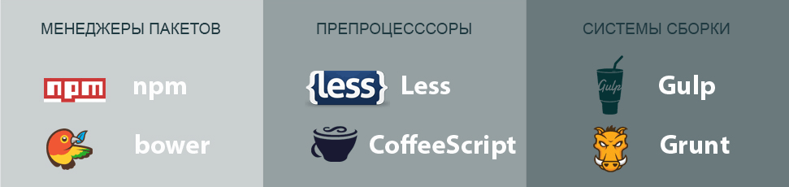

Автоматизация работы с Gulp
На самом деле, в любом процессе разработки сайта вы обычно должны создать некоторый набор файлов и папок, который соответствует желаемой структуре, наиболее подходящей вашему проекту. В этом случае вы должны заботиться о сжатии и минимизации CSS и JavaScript, оптимизации изображений и куче всяких штук, которые необходимо учитывать при оптимизации сайта.
Дополнительно в процессе создания сайта происходит много часто повторяющихся действий, таких как обновление страниц для просмотра вносимых изменений. Всё это на деле утомительная и пустая трата времени. Представьте, что у вас есть система, которая делает всё это за вас. При изменении CSS-файла создаётся минимизированная версия и то же самое происходит с JavaScript-файлом. Посмотрите, что вы можете автоматически делать с помощью Gulp:
- минимизировать CSS;
- минимизировать JavaScript;
- сжимать и оптимизировать изображения;
- компилировать файлы Sass, CoffeeScript, Jade;
- автоматически перезагружать браузер, вместо обновления вручную через F5.
Что такое система сборки?

В основном, система сборки представляет собой набор выполняемых задач (менеджеры пакетов, препроцессоры и инструменты сборки) применяемых для автоматизации частых задач в процессе разработки.
Это значит, что вам не надо самостоятельно делать компиляцию, минимизацию, оптимизацию, перегрузку, загрузку и др. Всё, что вам нужно сделать — это написать небольшой код, который будет делать работу за вас: такой код называется задачей.
Также не возникнут проблемы и при управлении фронтенд-библиотеками, вроде jQuery, Backbone, AngularJS. Вы будете использовать то, что называется менеджером пакетов, который берёт заботу на себя. Менеджер пакетов может загрузить библиотеку в папку проекта и при необходимости внедрить её в исходный код. Здорово, не правда ли!
С популярностью препроцессоров, таких как Sass, CoffeeScript, TypeScript, Jade, становится проще извлечь скрытую силу из некоторых родных языков, вроде CSS. Таким образом, вместо написания исходного CSS вы можете использовать Sass, чтобы написать его более эффективно. После того как вы пишете CSS с помощью Sass, вы должны скомпилировать и превратить его в обычный CSS, чтобы ваш браузер мог его понять. Так что этот процесс также может трактоваться как автоматизированная задача.
Итак, после того как вы написали или пока пишите CSS с Sass, JavaScript с помощью CoffeeScript или TypeScript, а HTML с Jade, вы определяете задачи, которые будут компилировать всё это в родной язык. Вы также напишите задачи, которые будут управлять фронтенд-библиотеками, как упоминалось выше. Но одних задач недостаточно, нам нужна система для запуска этих задач, которая может сказать: «Хорошо, у меня есть работа, давай её выполним».
Вот где появляется инструмент запуска задач. Нам хорошо известно два таких инструмента: Grunt и Gulp.
В этом руководстве мы будем использовать Gulp и для этого есть причина. Вы должны знать одну вещь — Gulp не единственно доступная система сборки. Перед Gulp появился Grunt. Какое-то время Grunt был фаворитом, но по некоторым причинам люди сегодня предпочитают Gulp.
Вот основные упоминаемые причины, когда речь заходит о том, почему люди отдают предпочтение Gulp, а не Grunt:
Grunt
- Слишком многословен.
- Высокий порог обучения.
- Много настроек.
Gulp
- Быстрый.
- Простой для обучения.
- Приоритет кода над конфигурацией.
Итак, я собираюсь говорить о системе сборки Gulp. В случае, если вы хотели бы узнать больше о Grunt, можете пойти сюда.
Итак, я могу определить систему сборки как комбинацию технологий, которая может автоматизировать некоторые типовые задачи в процессе разработки.